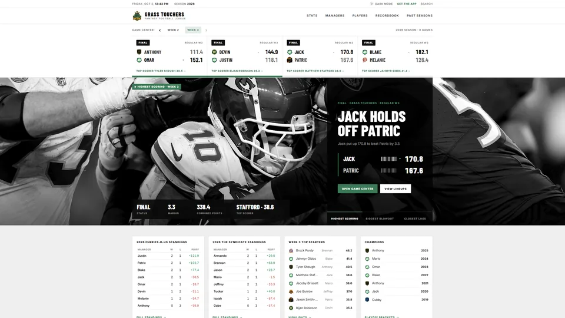
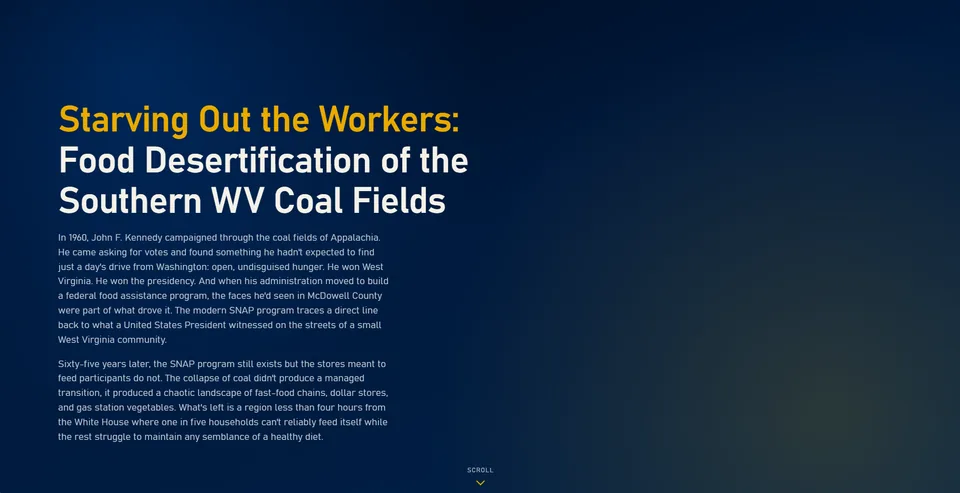
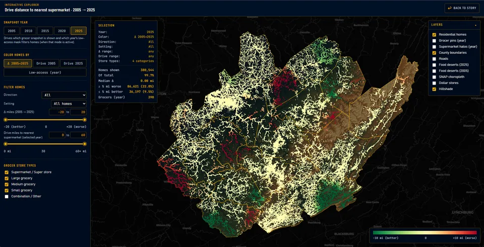
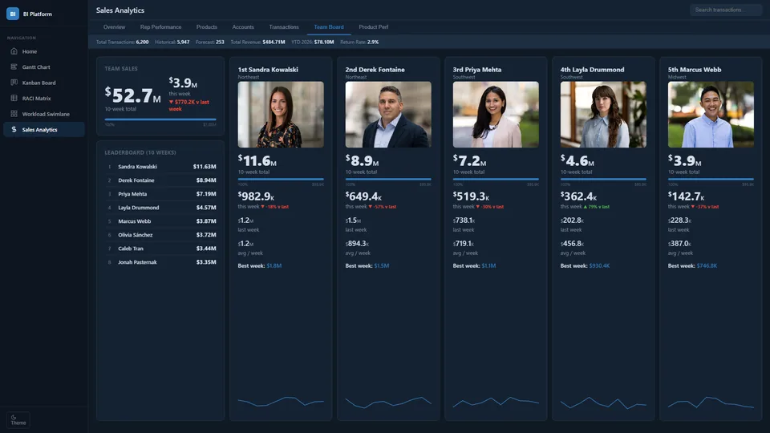
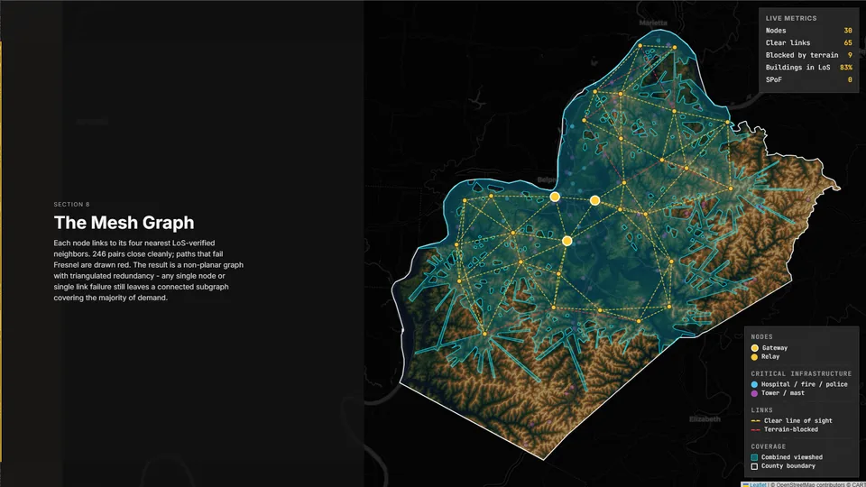
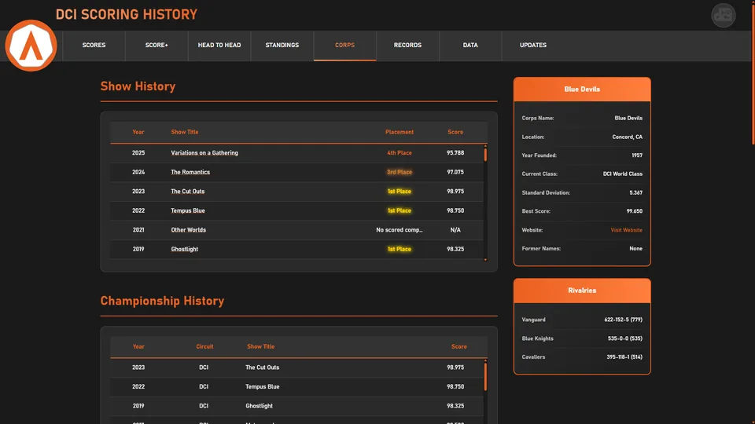
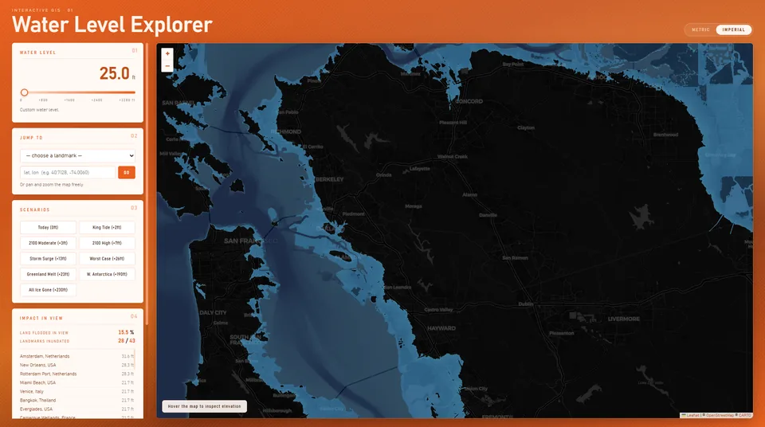

ABOUT
← Back to PortfolioNearly a decade of applied data science and analytics delivery across healthcare, energy, and government; spanning the full lifecycle from raw data ingestion through predictive modeling to executive-ready reporting. The engagement model is straightforward: take messy, siloed, or underutilized data and turn it into infrastructure and insights that directly reduce cost, surface risk, or accelerate decision-making.
Core domain expertise includes population health analytics, payment integrity, and regulatory compliance; specifically HCC risk stratification, HEDIS quality measurement, and CMS reporting frameworks. Technical delivery covers Python, SQL, R, Tableau, Power BI, and modern web technologies, with recent work integrating large language models into production government and healthcare workflows.
This practice also extends to organizational capability building: developing analytics training programs for non-technical staff, authoring economic and compliance reports used at the executive and regulatory level, and designing program evaluation frameworks that have measurably improved operational outcomes for the organizations that adopted them.
(1)SKILLS & CERTS
← Back to PortfolioHARD SKILLS
- Python (Pandas, NumPy, Scikit-learn)
- R & Statistical Modeling
- SQL & Database Design
- Population Health Analytics & Deep Learning
- Data Visualization (Tableau, Power BI)
- ETL & Data Pipelines
- A/B Testing & Experimentation
- NLP & Text Analytics
CERTIFICATIONS
- Career Essentials in GitHub, February 2025
- Biostatistics in Public Health, May 2024
- Health Care Strategy Certificate, January 2024
- Health Care Economics Certificate, September 2023
- Data Science for Business Certificate, May 2023
- Big Data for Social Good Certificate, May 2023
TOOLS
- Python / Jupyter / VS Code
- Tableau / Power BI / Looker
- PostgreSQL / BigQuery / Snowflake
- Apache Spark / Airflow
- Docker / Git / GitHub Actions
- TensorFlow / PyTorch
DATA VISUALIZATION
← Back to PortfolioThe problem: Decision-makers across healthcare and government are asked to act on data they cannot see clearly; data buried in spreadsheets, fragmented across systems, or delivered in formats that require a technical interpreter to read.
The process: Engagements begin with stakeholder interviews to define the decisions each dashboard must support. Source data, including claims files, enrollment records, quality measure extracts, and operational logs, is profiled, cleaned, and modeled into a reporting layer. Deliverables are built in Tableau, Power BI, or custom web-based tools depending on the organization's existing stack, with self-contained VBA-driven workbooks available for environments without BI platform access.
Delivered outcomes: Population health dashboards tracking 30+ HEDIS quality measures with drill-down by region and provider. Risk adjustment visualizations mapping HCC score distributions and coding gap trends for plan-level strategy. Payment integrity scorecards surfacing anomalous billing patterns in near real time. Executive-facing economic and program evaluation reports produced through automated Python pipelines (Matplotlib, Plotly), replacing manual chart-building processes that previously consumed 20+ analyst hours per reporting cycle.
(3)POPULATION HEALTH ANALYTICS
← Back to PortfolioThe problem: Health systems and public agencies are expected to improve outcomes across chronic disease, preventive care, utilization, and equity, but their data is often fragmented across disparate eligibility criteria, arbitrary quality measures, and community-level data sources. That fragmentation leads to delayed interventions, uneven resource allocation, and missed high-risk populations.
The process: Population health analytics engagements unify clinical, claims, and social determinants data into a single measurement framework. Work includes cohort design, risk segmentation, quality metric tracking (including HEDIS-style measures), utilization trend analysis, and geographic access modeling. Deliverables are built as executive-ready narratives and interactive visuals so decision-makers can move from broad reporting to targeted action at county, provider, and community levels.
Delivered outcomes: Earlier identification of high-need populations, clearer prioritization for outreach and care management, and reproducible reporting that ties performance to place. Food desert mapping in Southern West Virginia is one example within a broader portfolio focused on prevention strategy, access gaps, quality improvement, and program impact.
(4)DATA ENGINEERING
← Back to PortfolioThe problem: Analysts spend the majority of their time on manual data preparation; copying files, reformatting extracts, and reconciling mismatched schemas, instead of producing the analysis the organization actually needs. Reporting timelines are measured in weeks when they should be measured in hours.
The process: Engagements start with a data audit: cataloging source systems, mapping file formats and delivery cadences, and identifying where manual steps can be eliminated. ETL pipelines are built in Python and SQL to ingest, validate, transform, and load claims data, enrollment files, and provider rosters into analysis-ready schemas. Orchestration is handled through Apache Airflow or cron-based scheduling. Reporting layers use stored procedures and materialized views in PostgreSQL or Snowflake. All pipeline code is version-controlled (Git), tested, and deployed through CI/CD tooling. Documentation is written so any team member can run, audit, or extend it without tribal knowledge.
Delivered outcomes: Reporting turnaround reduced by over 60% across multiple engagements. Manual data preparation eliminated for recurring deliverables. Reproducible, auditable pipelines that survive staff turnover. Cloud-native implementations on BigQuery and AWS S3 processing millions of records on automated schedules with built-in validation and error alerting.
(5)STATISTICAL ANALYSIS
← Back to PortfolioThe problem: Organizations make high-stakes decisions, such as program funding, clinical interventions, and regulatory submissions, without the statistical rigor to know whether their data actually supports the conclusion. Anecdotal evidence is treated as proof. Correlation is reported as causation. Results would not survive external review.
The process: Each engagement is scoped around a specific decision: Does this intervention improve outcomes? Are billing patterns deviating from expected norms? Which factors most strongly predict risk? The appropriate method, including hypothesis testing, multivariate regression, survival analysis, time-series forecasting, or A/B experimental design, is selected based on the data structure and the evidentiary standard required. Analysis is executed in Python (SciPy, Statsmodels) or R depending on the deliverable format and client environment. Every result includes effect sizes, confidence intervals, and documented assumptions; not just p-values.
Delivered outcomes: Economic and compliance reports grounded in defensible statistical evidence, used for executive strategy and regulatory submissions at the federal level. Program evaluation frameworks that isolated intervention effects across workforce and public health programs. Multivariate models quantifying the impact of policy changes on healthcare utilization. Deliverables are presented as plain-language narratives built for decision-makers, not statisticians.
(6)GIS
← Back to PortfolioThe problem: Organizations often have geospatial data but no reliable way to convert it into operational insight. Terrain, coverage gaps, and infrastructure risk are hard to evaluate when location data is fragmented across tools.
The process: GIS work begins with spatial data alignment: coordinate normalization, layer validation, and quality checks across shapefiles, raster data, and GPS logs. Analysis workflows are built to map coverage, trace network relationships, and detect geographic blind spots. Outputs are delivered as interactive maps and reproducible notebooks that support both technical teams and non-technical stakeholders.
Delivered outcomes: Clear, decision-ready mapping products for planning and field operations. Faster identification of terrain-driven constraints and high-value expansion zones. Repeatable spatial analysis pipelines that reduce manual mapping effort and improve confidence in geographic decision-making.
(7)PROJECTS
← Back to Portfolio
Grass Touchers: Fantasy Football League Hub
Data Story: Food Desertification of Southern WV
Interactive Data Visual: WV Food Deserts
Dashboard System
GIS Appalachia Mesh
DCI Score History
GIS Global Water Levels